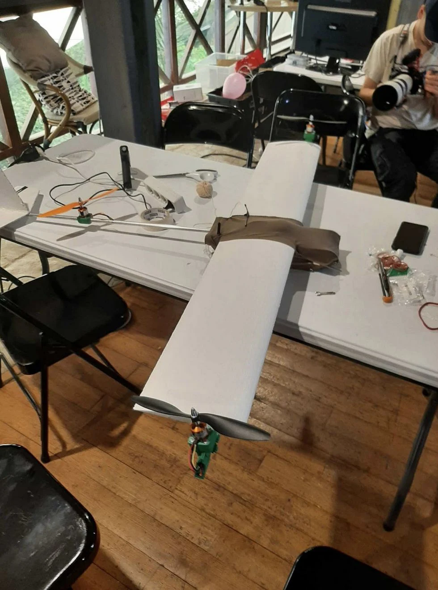

01Hardware / Competition
Dassault UAV Challenge
A tilt-rotor tricopter built for sea rescue.
- Discovered UAV development and learned the ArduPilot firmware.
- Contributed to a VTOL tricopter with two vectored motors for vertical take-off and yaw control.
- Worked on avionics and software integration; the team finished 5th.